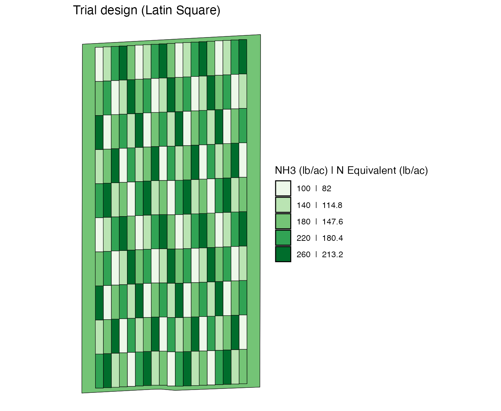
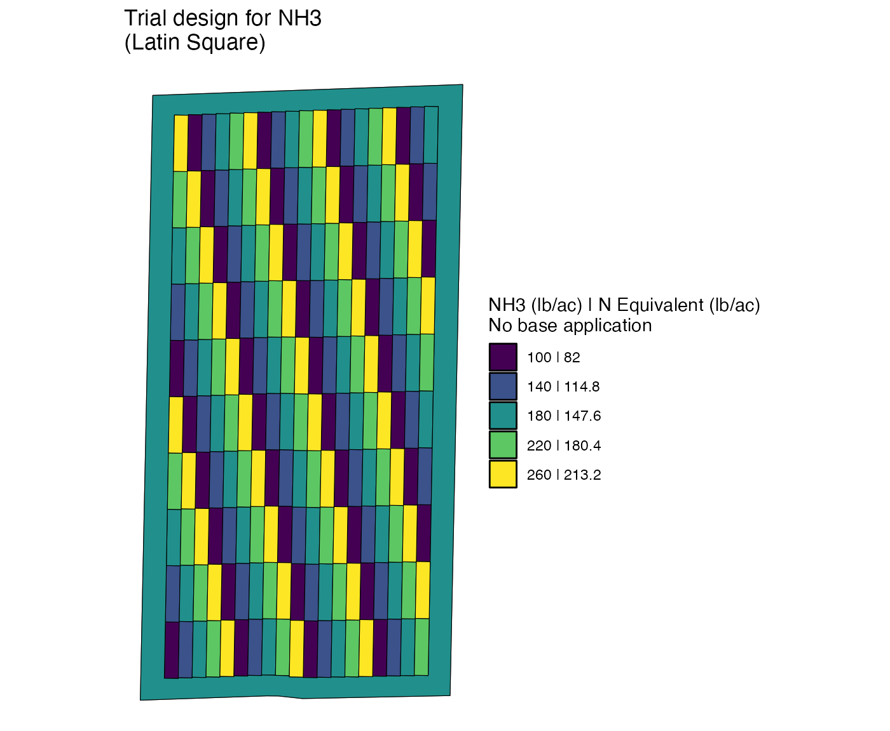
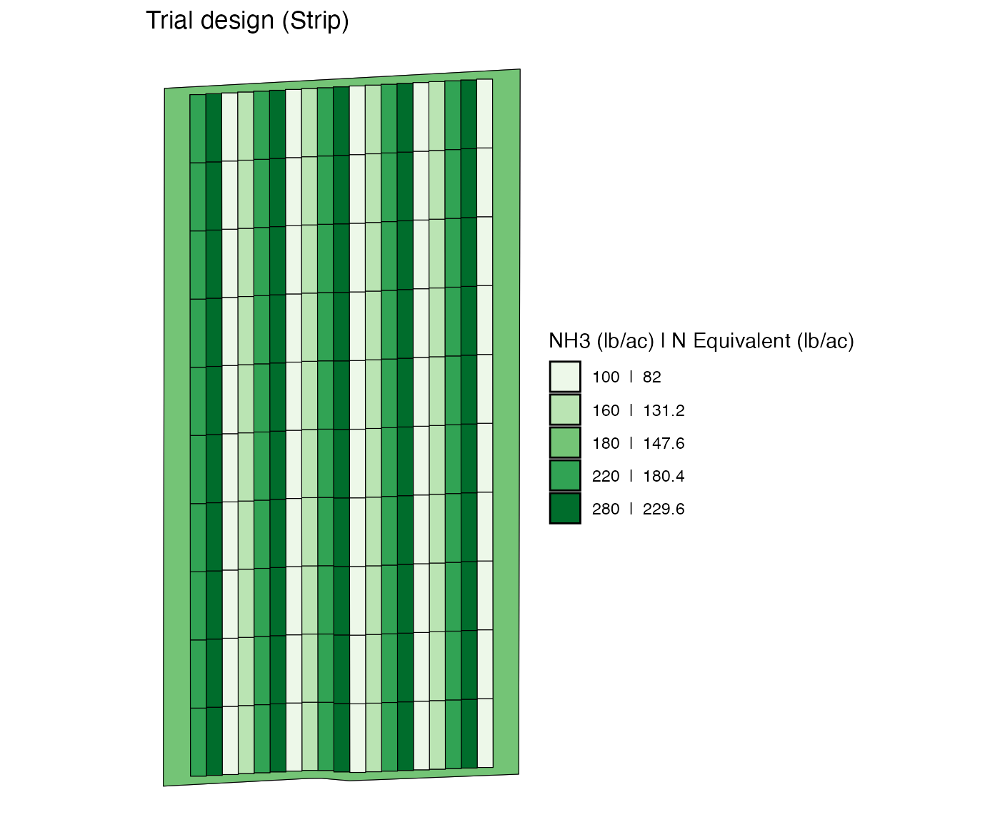
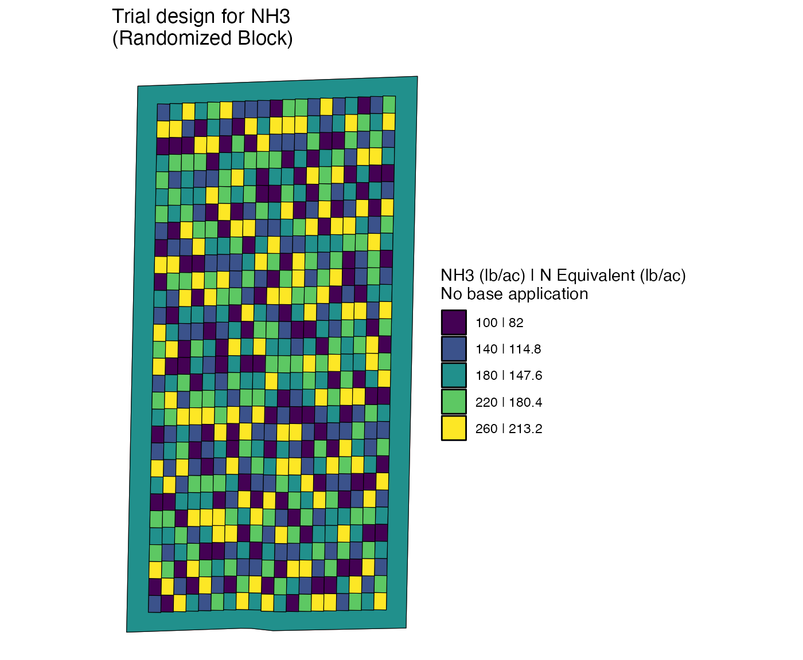
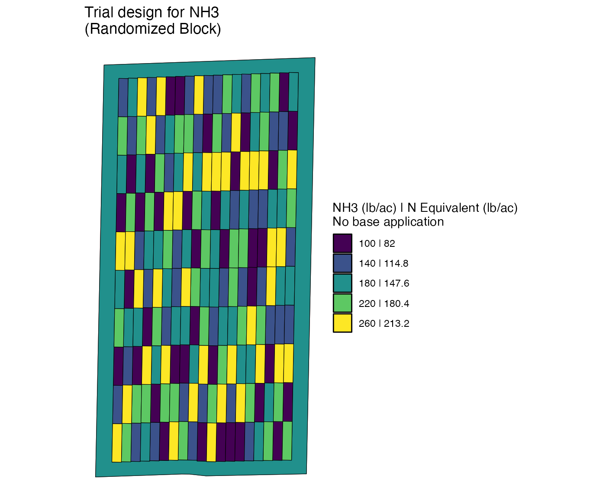
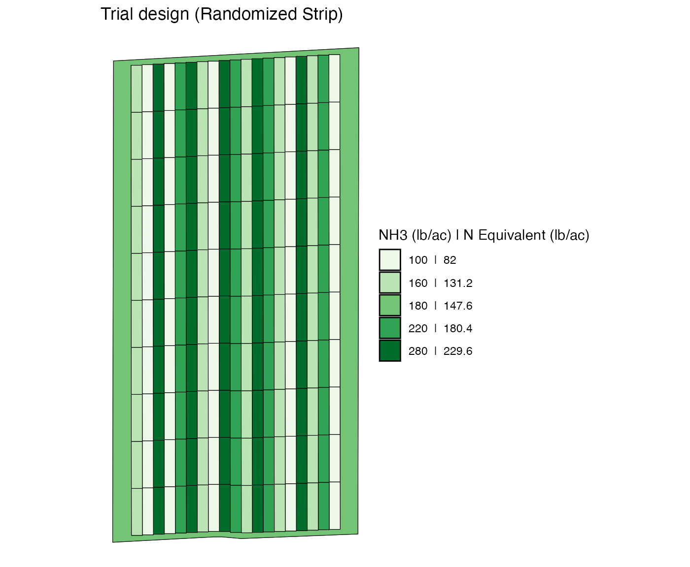

Trial Design Options
V1-trial-design-options.RmdThe ofpetrial package offers various trial design types.
This vignette provides examples of availabl design types. Let’s first
prepare experiment plots to which we assign rates using various trial
design options.
library(ofpetrial)
library(patchwork)
n_plot_info <-
prep_plot_f(
input_name = "NH3",
machine_width = 30,
section_num = 1,
harvester_width = 20,
headland_length = 30,
side_length = 60
)
exp_data <-
make_exp_plots(
input_plot_info = n_plot_info,
boundary_data = system.file("extdata", "boundary-simple1.shp", package = "ofpetrial"),
abline_data = system.file("extdata", "ab-line-simple1.shp", package = "ofpetrial"),
abline_type = "free"
)
viz(exp_data, type = "layout", abline = FALSE)
We will be assigning rates to the experimental plots using various trial design types below.
Latin Square (“ls”)
By default, here is what design_type = "ls"
produces.
n_rate_info <-
prep_rate(
plot_info = n_plot_info,
gc_rate = 180,
unit = "lb",
rates = c(100, 140, 180, 220, 260),
design_type = "ls"
)
td_ls_d <-
assign_rates(
exp_data = exp_data,
rate_info = n_rate_info
)
#> Note: You specified neither rank_seq_as or rank_seq_ws. The resulting trial design is equivalent to design_type = "jcls"
viz(td_ls_d, abline = FALSE)
However, you can customize the spatial pattern of input rate when
design_type = "ls" using the rank_seq_ws and
rank_seq_as options. To do so, it is important to
understand how plot_id and strip_id are
assigned to each of the plots. Here are their maps.
viz(td_ls_d, type = "strip_id") | viz(td_ls_d, type = "plot_id")
#> Warning: Removed 1 rows containing missing values (`geom_text()`).
#> Removed 1 rows containing missing values (`geom_text()`).As you can see, plot_id is the unique numeric identifier
assigned to each of the plots within a strip. So, there
are multiple plots with the same plot_id values, but a
combination of strip_id and plot_id uniquely
identifies a plot.
The rank_seq_ws option specifies the order of rate
rankings to be repetead withing a strip (this is why
_ws at the end of the function). Suppose you have
rank_seq_ws = c(5, 4, 3, 2, 1). 5 refers to
the 5th-ranked (highest) rate, which is 260 because we have
rates = c(100, 140, 180, 220, 260) above. 1
refers to the first-ranked (lowest) rate, which is 100. Rates are
assigned in this order to the plots within a strip. The
rank_seq_as option specifies the order of the rate rankings
of the very first plot of each strip
across all the strips. So, for example, if
rank_seq_as = c(1, 4, 3, 2, 5), then the first plot
(plot_id == 1) of the first strip
(strip_id == 1) will be assigned rate rank of 1. The first
plot of 5th strip ((strip_id == 5)) will be assigned rate
rank of 5. This sequence will be repeated until the first plot of all
the strips are assigned a rate rank. Now, for a given strip, rate ranks
specified by rank_seq_ws will be repeated starting
from the rate rank of the first plot. For example, the first
plot of the 3rd strip has a rate rank of 3 (so, 180). This means that
the code will go over the rest of the rate ranks in
rank_seq_ws (2 and 1), and then go back to the beginning of
rank_seq_ws, which is 5. So, for the third strip, the rate
rank of its plots look like this.
rank_seq_ws <- c(5, 4, 3, 2, 1)
data.frame(
plot_id = 1:10,
rate_rank = c(3, 2, 1, rank_seq_ws, rank_seq_ws[1:2])
)
#> plot_id rate_rank
#> 1 1 3
#> 2 2 2
#> 3 3 1
#> 4 4 5
#> 5 5 4
#> 6 6 3
#> 7 7 2
#> 8 8 1
#> 9 9 5
#> 10 10 4Let’s try few examples.
n_rate_info <-
prep_rate(
plot_info = n_plot_info,
gc_rate = 180,
unit = "lb",
rates = c(100, 140, 180, 220, 260),
design_type = "ls",
rank_seq_ws = c(1, 2, 3, 4, 5),
rank_seq_as = c(1, 2, 3, 4, 5)
)
td_ls_1 <-
assign_rates(
exp_data = exp_data,
rate_info = n_rate_info
)
viz(td_ls_1, type = "rates", abline = FALSE)
n_rate_info <-
prep_rate(
plot_info = n_plot_info,
gc_rate = 180,
unit = "lb",
rates = c(100, 140, 180, 220, 260),
design_type = "ls",
rank_seq_ws = c(5, 2, 4, 1, 3),
rank_seq_as = c(1, 5, 2, 4, 3)
)
td_ls_2 <-
assign_rates(
exp_data = exp_data,
rate_info = n_rate_info
)
viz(td_ls_2, type = "rates", abline = FALSE)
Strip trial (“strip”)
You can design a strip trial using
design_type = "strip". You can specify the spatial pattern
of strip rates using the rank_seq_as option. The code below
repeats 100 (rank 1), 280 (rank 4), 220 (rank 3), and 160 (rank 2).
Since the strip trial has a single rate per strip,
rank_seq_ws is not available unlike
design_type = "ls".
n_rate_info <-
prep_rate(
plot_info = n_plot_info,
gc_rate = 180,
unit = "lb",
rates = c(100, 160, 220, 280),
rank_seq_as = c(1, 4, 3, 2),
design_type = "strip",
)
td_strip <-
assign_rates(
exp_data = exp_data,
rate_info = n_rate_info
)
viz(td_strip, type = "rates", abline = FALSE)
For the strip trial, you can specify the full sequence unlike the other design options. We have a total of 19 strips in this experiment.
#--- total number of strips ---#
max(exp_data$exp_plots[[1]]$strip_id)
#> [1] 19Let’s provide a vector of length 19 to rank_seq_as.
n_rate_info <-
prep_rate(
plot_info = n_plot_info,
gc_rate = 180,
unit = "lb",
rates = c(100, 160, 220, 280),
rank_seq_as = c(1, 4, 3, 2, 2, 3, 4, 1, 3, 2, 1, 4, 2, 3, 1, 4, 4, 2, 3),
design_type = "strip",
)
td_strip <-
assign_rates(
exp_data = exp_data,
rate_info = n_rate_info
)
viz(td_strip, type = "rates", abline = FALSE)
Randomized Block (“rb”)
n_rate_info <-
prep_rate(
plot_info = n_plot_info,
gc_rate = 180,
unit = "lb",
rates = c(100, 140, 180, 220, 260),
design_type = "rb",
)
td_rb <-
assign_rates(
exp_data = exp_data,
rate_info = n_rate_info
)
viz(td_rb, type = "rates", abline = FALSE)
When design_type = "rb", blocks are created internally
when assign_rates() is run. Here is what blocks look
like.
add_blocks(td_rb) %>% viz(type = "block_id")
#> Warning: Removed 1 rows containing missing values (`geom_text()`).
Since there are five distinctive rates, each block consists of five by five plots. In each of the block, the five rates are randomly assigned in a way that each of the rates appear exactly five times.
Jump-conscious Latin Square (“jcls”)
Jump-conscious Latin Square (design_type = "jcls) is
merely a special type of Latin Square design. Indeed, you can create
exactly the same design by specifying rank_seq_as and
rank_seq_ws appropriately. JCLS ensures that the jumps in
rate from plot to plot in the direction of the applicator/planter less
than equal to rate rank of 2. For exmaple, input rate never goes from
100 to 220 or 260 in JCLS.
n_rate_info <-
prep_rate(
plot_info = n_plot_info,
gc_rate = 180,
unit = "lb",
rates = c(100, 140, 180, 220, 260),
design_type = "jcls",
)
td_jcls <-
assign_rates(
exp_data = exp_data,
rate_info = n_rate_info
)
viz(td_jcls, type = "rates", abline = FALSE)
Extra Jump-conscious Alternate (“ejca”)
This design alternate high-rate strip and low-rate strip, thus avoiding sudden changes in input rates so that machines can handle them.
n_rate_info <-
prep_rate(
plot_info = n_plot_info,
gc_rate = 180,
unit = "lb",
rates = c(100, 140, 180, 220, 260, 300),
design_type = "ejca",
)
td_ejca <-
assign_rates(
exp_data = exp_data,
rate_info = n_rate_info
)
viz(td_ejca, type = "rates", abline = FALSE)
Sparse (“sparse”)
n_rate_info <-
prep_rate(
plot_info = n_plot_info,
gc_rate = 180,
unit = "lb",
rates = c(100, 140, 180, 220, 260, 300),
design_type = "sparse",
)
td_sparse <-
assign_rates(
exp_data = exp_data,
rate_info = n_rate_info
)
viz(td_sparse, type = "rates", abline = FALSE)